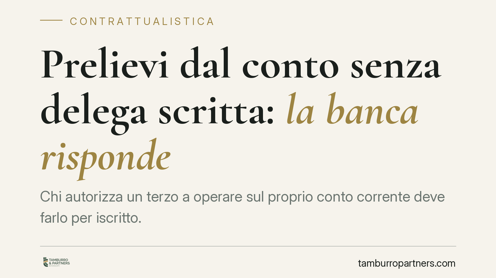

Prelievi dal conto senza delega scritta: la banca risponde
Chi autorizza un terzo a operare sul proprio conto corrente deve farlo per iscritto. Una recente pronuncia della Corte di Cassazione ribadisce che la delega non può essere provata per presunzioni: in assenza di procura scritta, i prelievi effettuati da chi non era legittimato espongono la banca a responsabilità. Un principio che riguarda correntisti, delegati e, soprattutto, gli eredi.

Il principio affermato
Una recente ordinanza della Corte di Cassazione (gli estremi esatti sono *da verificare* prima di ogni utilizzo documentale) torna su un tema pratico e ricorrente: la forma della delega a operare su un conto corrente bancario.
La regola è netta. Quando il contratto di base richiede la forma scritta, anche l'atto con cui si conferisce a un terzo il potere di concluderlo o di operare deve rivestire la medesima forma. È il principio della cosiddetta *simmetria delle forme*, previsto dall'art. 1392 del codice civile: la procura non ha effetto se non è conferita con le forme prescritte per il contratto che il rappresentante deve concludere.
Tradotto: se manca la delega scritta, la banca che consente a un terzo di prelevare dal conto non può invocare un'autorizzazione tacita o desunta da comportamenti concludenti. E risponde delle somme uscite indebitamente.
Inquadramento normativo
Il rapporto banca-cliente poggia su un presupposto formale preciso. L'art. 117 del Testo Unico Bancario (D.Lgs. 385/1993) impone che i contratti bancari siano redatti per iscritto, a pena di nullità. È questa la norma che àncora l'obbligo di forma scritta al rapporto di conto corrente, e dalla quale discende, per effetto dell'art. 1392 c.c., l'esigenza che anche la delega a operare sia scritta.
Ne consegue che la prova della legittimazione del terzo non può essere fornita per presunzioni. Non bastano abitudini, rapporti familiari o conoscenza del PIN: serve un atto formale, verificabile e opponibile.
Un profilo spesso trascurato riguarda i prelievi effettuati dopo la morte del titolare. La delega o procura si estingue automaticamente con la morte del delegante, ai sensi dell'art. 1722, n. 4, c.c., che disciplina l'estinzione del mandato. Da quel momento, chi continua a operare sul conto agisce senza alcun titolo, e le somme prelevate rientrano nell'asse ereditario.
Implicazioni pratiche
Per il correntista. La delega verbale o di fatto non offre tutela. Solo un atto scritto consente di definire con chiarezza chi può operare, entro quali limiti e con quali poteri.
Per il delegato. Operare sul conto altrui senza una procura formale espone a contestazioni sulla legittimità dei prelievi, anche in presenza di buoni rapporti con il titolare.
Per gli eredi. È qui che il principio mostra la sua rilevanza maggiore. Le somme prelevate da terzi privi di delega scritta, o prelevate dopo il decesso del titolare, possono essere recuperate. La banca che ha consentito operazioni non autorizzate può essere chiamata a rispondere delle somme uscite indebitamente dal conto del *de cuius*.
Per la banca. L'istituto ha un onere di verifica. Consentire operazioni senza riscontrare la validità del titolo che le legittima può integrare un inadempimento contrattuale.
Termini di prescrizione
L'azione verso la banca ha natura contrattuale e si prescrive nel termine ordinario di dieci anni (art. 2946 c.c.). Il termine decorre, di regola, dal momento in cui l'operazione contestata è stata eseguita. Un'individuazione precisa del *dies a quo* richiede però la ricostruzione puntuale dei movimenti e delle date, che possono incidere sul calcolo.
Cosa fare in concreto
- Formalizza ogni delega per iscritto. Indica con precisione poteri, limiti di importo e durata. Evita autorizzazioni generiche o verbali.
- Conserva la documentazione contrattuale. Contratto di conto, moduli di delega ed estratti conto sono la base di qualsiasi verifica.
- Alla morte del titolare, comunica subito il decesso alla banca. La delega si estingue di diritto: la segnalazione tempestiva blocca operazioni non più legittime.
- In sede successoria, verifica i movimenti. Richiedi gli estratti conto per individuare prelievi successivi al decesso o privi di titolo.
- Valuta i tempi. Un'analisi tecnica della documentazione bancaria consente di accertare se sussistano i presupposti di una richiesta di restituzione e di verificare il rispetto dei termini di prescrizione.
---
*Contributo informativo a cura di Tamburro & Partners - Avv. Giuseppe Tamburro. Non costituisce parere legale.*
Ogni contratto ha il suo equilibrio.
Se vuoi una revisione delle clausole o una redazione su misura, scrivi allo studio. Ti rispondiamo entro un giorno lavorativo.